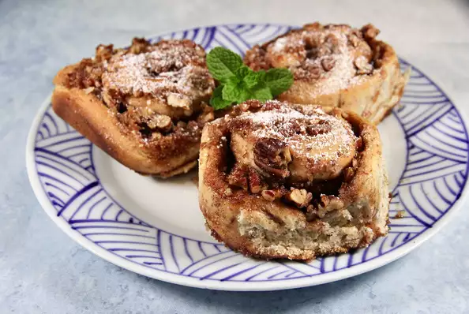

Vegan Cinnamon Rolls

Description
Odin's super secret vegan cinnamon rolls from a distant secret planet called earth.
Ingredients
- ¾ cup vanilla-flavored almond milk
- 2 tablespoons vegetable oil
- ¼ cup warm water
- 3 tablespoons warm water
- 3 tablespoons ground flax seeds
- 3 ¼ cups all-purpose flour, divided
- ½ cup white sugar
- 1 (.25 ounce) package active dry yeast
- ½ teaspoon sea salt
- 1 ¼ cups brown sugar
- 1 teaspoon vanilla extract, or to taste
- ½ teaspoon almond extract, or to taste
- 1 teaspoon ground cinnamon, or to taste
- ground nutmeg, or to taste
- ½ teaspoon ground cardamom, or to taste
- 3 tablespoons vegetable oil
- 2 cups chopped pecans (Optional)
Steps!
- Preheat oven to 375 degrees F (190 degrees C). Grease a 9x13-inch glass baking pan.
- Heat almond milk over medium heat until frothy, about 5 minutes. Remove from heat and stir in 2 tablespoons vegetable oil. Cool until milk is lukewarm.
- Stir 1/4 cup plus 3 tablespoons warm water and ground flax together in a measuring cup.
- Combine 2 1/4 cups flour, white sugar, yeast, and salt in a large bowl. Add milk mixture and water mixture; mix well.
- Stir in remaining flour 1/2 cup at a time until dough comes together.
- Turn dough out onto a lightly floured surface and knead until smooth and springy, 5 to 7 minutes.
- Return dough to the bowl and cover with a damp cloth. Place on top of the oven and let rest for 10 to 20 minutes.
- Mix brown sugar, vanilla extract, almond extract, cinnamon, nutmeg, and cardamom together in a bowl. Stir in 3 tablespoons vegetable oil.
- Return dough to the floured surface and roll into a large rectangle.
- Spread the brown sugar mixture onto the dough.
- Sprinkle pecans on top. Roll the dough along the longer side of the rectangle. Use a length of thread to cut the dough into 1 1/2-inch segments.
- Place into the prepared baking pan swirl-side up.
- Cover baking pan with a damp cloth and place on top of the oven. Let rise for 30 to 40 minutes. Remove cloth.
- Bake until rolls are golden brown, about 30 minutes.
Back to main page
Next Recipe